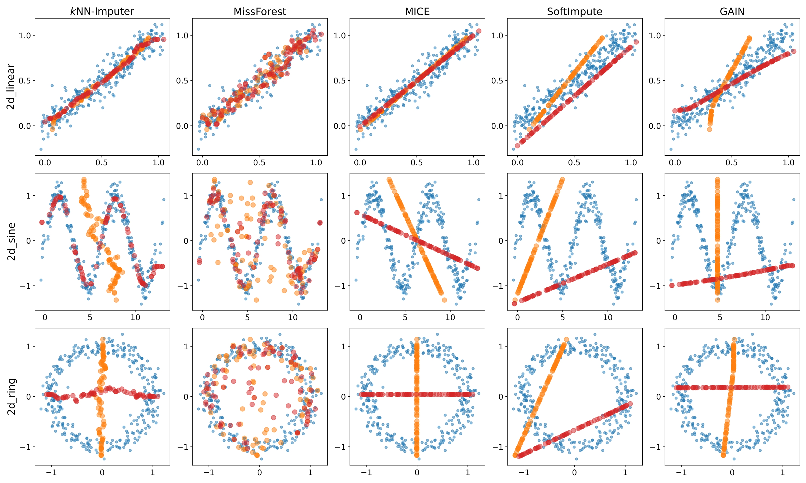
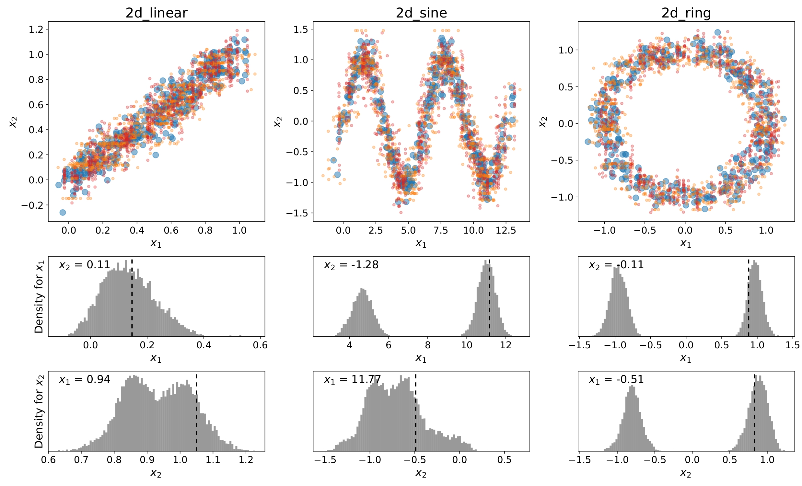

Numerical data imputation
and its challenges
And my solution: the kNNxKDE
Apparently, a simple problem
If most datasets on Kaggle are clean and nicely organized, real world datasets always
come with missing, erroneous, or corrupted values. However, most Machine Learning
algorithms cannot be applied using incomplete datasets. Therefore, we are left with
only one solution which is imputing (i.e. estimating) the missing values.
For about 4 years, I have worked on this apparently simple problem: how to estimate
missing values in a numerical dataset? There exist many strategies, and most of
them aggregate individual predictions to lead to more robust imputed values. But this
strategy leads to a "mode-collapse" problem when several possible values are compatible
with the data distribution.

The kNNxKDE
The method I proposed uses a continuous version of the k-NN (k nearest neighbors)
algorithm coupled with kernel density estimators (KDE). Hence its name, the kNNxKDE.
The idea is that for every missing value, the kNNxKDE returns a probability
distribution instead of a point estimate. This allows to quantify the uncertainty
for each value, and offers the possibility to sample, take the mean, the median, or any
other statistic for the final imputation value.

My algorithm has been published in TMLR with the Reproducibility Certification.
→ Check it out
here (OpenReview)
→ And the code is
here (GitHub)